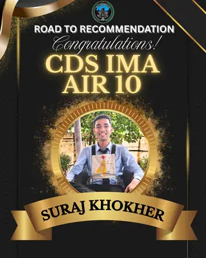
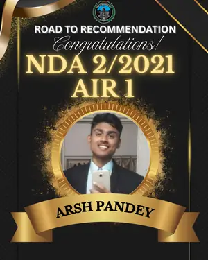
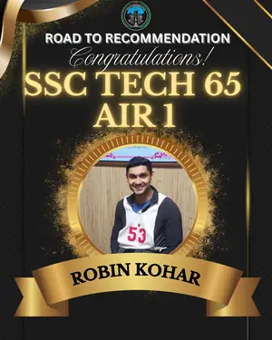
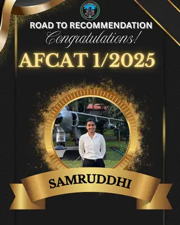
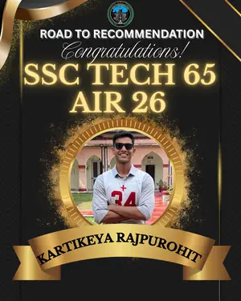
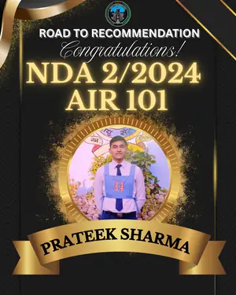
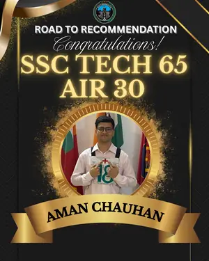
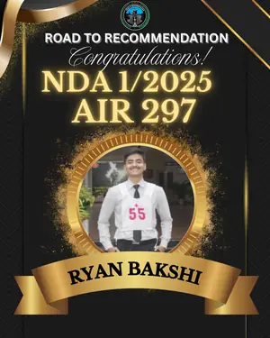
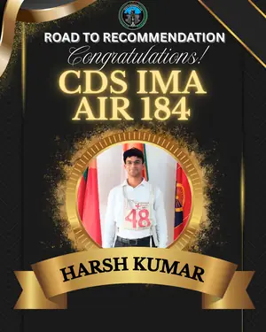
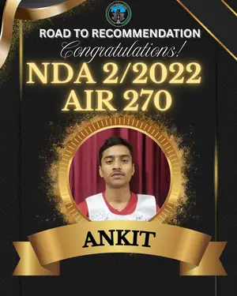

Stop memorising answers. Get recommended as yourself.
SSB interview mentorship for NDA, CDS, AFCAT, TES and JAG. Batches of 15, online or in Patel Nagar, Delhi. Mentors go through your TAT, WAT, SRT and PIQ with you, one by one.
- 580+candidates recommended
- 5.0★147 Google reviews
- 15candidates per batch, maximum
Send a message. Our admissions team calls you back within 4–6 hours.
Next batch dates on WhatsApp. Online ₹12,000 or Delhi classroom ₹18,000, 15 days.

They were stuck too. Now they're recommended.
NDA, CDS, AFCAT, SSC Tech, JAG and more. Four AIR 1s among them.


















Swipe to see more.
Why good candidates keep getting screened out
-
Memorised templates
Board psychologists spot coached answers quickly. At R2R you build answers from your own life, so they hold up under pressure.
-
Nobody reads your answers
In a batch of 150, no one checks your TAT or PIQ. With 15 per batch, a mentor goes through every story and response with you.
-
Your story doesn't match up
When your PIQ, psych tests and interview tell different stories, the conference notices. We check that they line up.
 1-on-1 Dossier Audit
1-on-1 Dossier Audit
 Real Board Timing
Real Board Timing
What we work on, stage by stage
- Day 1
Screening: OIR and PPDT
Your 60-second narration, and how to lead a group discussion without shouting.
- Day 2
Psychology: TAT, WAT, SRT, SD
All 12 TAT stories, 60 WAT responses and 60 SRTs reviewed with you, line by line.
- Days 3–4
GTO tasks and group discussion
Leading through cooperation. Group tasks are practised in person in the Delhi batch.
- Interview
Personal interview
Mock interviews built from your PIQ, including rapid-fire and stress questions.
- Day 5
Conference
A final check that everything you said across five days tells one consistent story.
Your mentors were recommended themselves

Shashank Rai
Founder. AIR 19, CDS-1 2018. Recommended twice.
Psychology tests, PPDT and the interview.

Neha Vashisth
Recommended three times. MHA, TISS Mumbai.
Psychology, screening and Self Description.

Rahul Sharma
JAG-35, AIR 9. Advocate at the Armed Forces Tribunal.
PIQ-based mock interviews and stress questions.
Most of our recommended candidates were repeaters
“Facing 8 straight screen-outs made me feel like the defence doors were closed forever. Truly indebted to R2R for turning 8 rejections into a recommendation.”
“He went through all my 12 TAT stories and WAT responses line by line. Instead of copied coaching formulas, he showed me how to own my actual life story.”
“After 4 screen-outs and 3 conference-outs, I had lost faith in coaching academies. Neha Ma'am and Shashank Sir gave me brutally honest, constructive 1-on-1 feedback.”
Choose online or the Delhi classroom
Both are 15-day batches with the same three mentors.
Online batch
Live on video, from anywhere in India
₹12,000 full course
Separate modules for psychology, PIQ or interview also available.
- Timings
- Morning and evening batches
- Starts
- Ask us for the next date
- Live PPDT and TAT practice with screen sharing
- 1-on-1 mock interviews on video
- Recordings of every session, yours to keep
Already decided? Enrol on our course store
Delhi classroom batch
Patel Nagar, near Patel Nagar Metro (Blue Line)
₹18,000 tuition
Reserve a seat for ₹2,000, adjusted against the fee.
- Timings
- 9:00 AM – 5:00 PM daily
- Starts
- Ask us for the next date
- Stay
- Budget PGs within walking distance
- Group discussions and GTO practice in person
- Face-to-face mock interviews with Rahul Sharma
- 15 candidates per batch, maximum
Questions people ask before joining
I've been screened out or conferenced out many times. Is it worth trying again?
Yes. Over 78% of our 580+ recommended candidates were repeaters. Yash was screened out 8 times before his Coast Guard recommendation. On the first call, we go through your previous attempts to find where it went wrong.
Do you guarantee a recommendation?
No. Be careful of anyone who does: the decision depends on how you perform at the board. What we promise is personal review of your answers, no memorised scripts, and mentors who have cleared the board themselves.
My English is average. Will that hold me back?
No. The board looks for clear thinking, emotional stability and how you work in a group, not vocabulary or accent. We help you organise your thoughts so you speak simply and confidently.
Should I choose online or the Delhi classroom?
Choose Delhi if you can come for 15 days and want in-person group tasks and interviews. Choose online if you're in college, working, or far from Delhi. Both get the same mentors and personal review.
Where is the Delhi classroom, and where can I stay?
In Patel Nagar, New Delhi, walking distance from Patel Nagar Metro on the Blue Line. There are budget student PGs nearby, and we can share options.
Tell us where you got stuck last time
Message us on WhatsApp. We'll call you back, go through your last attempt and help you pick the right batch.
Chat with us on WhatsApp